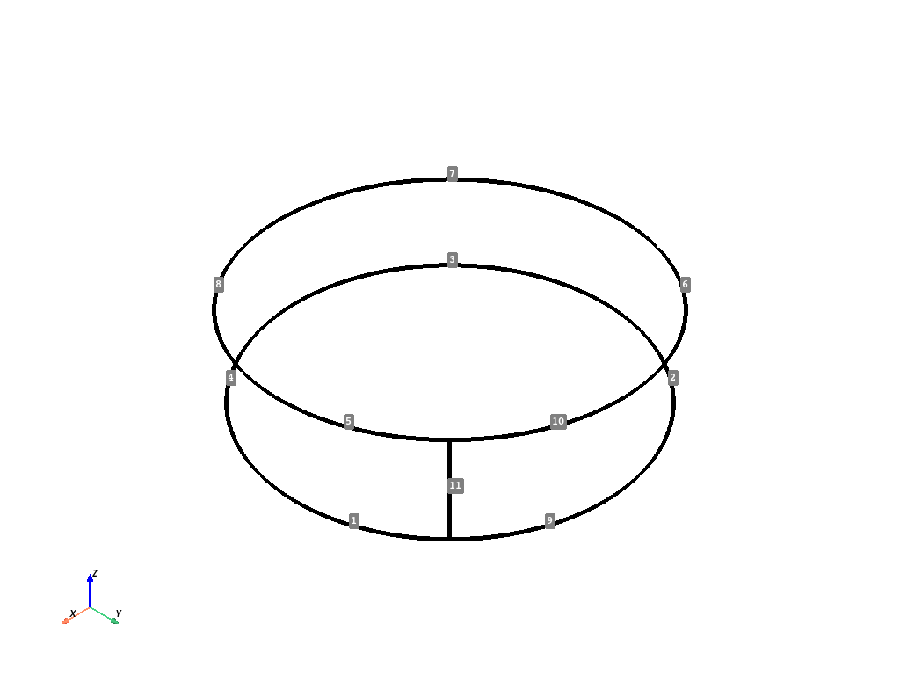
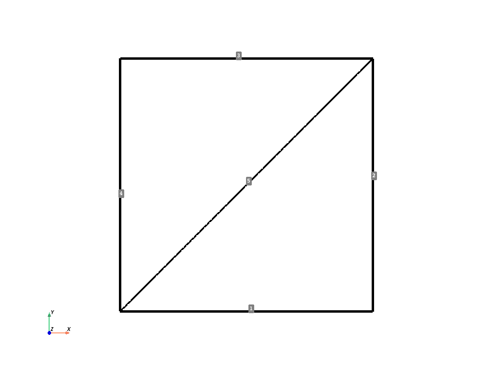
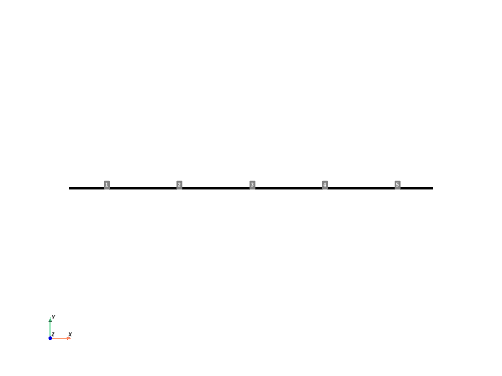
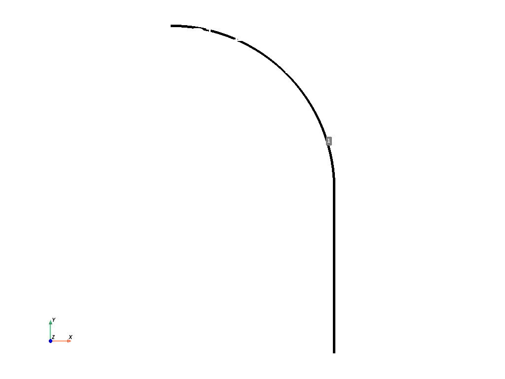
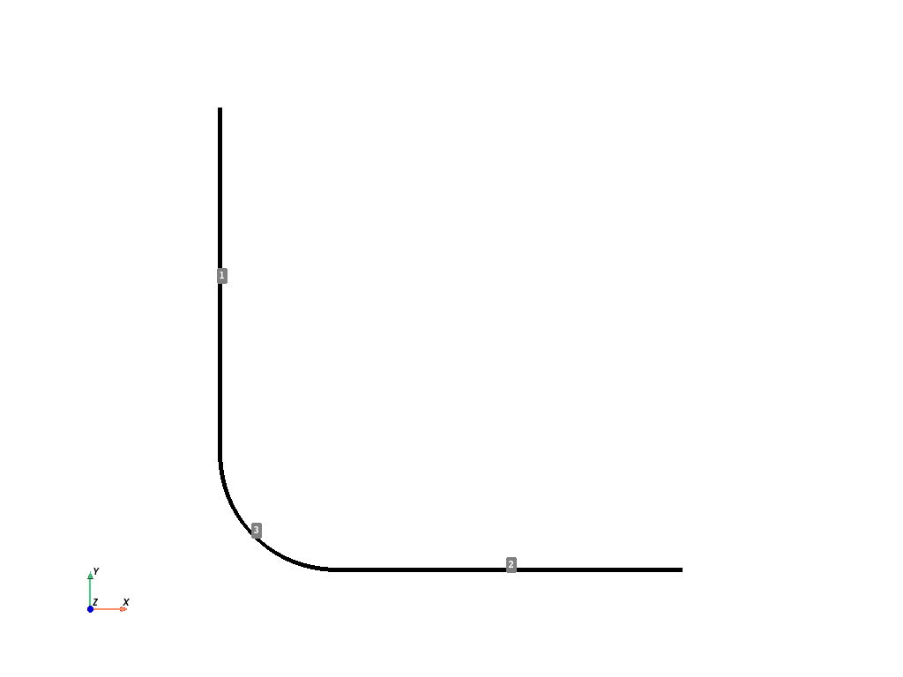
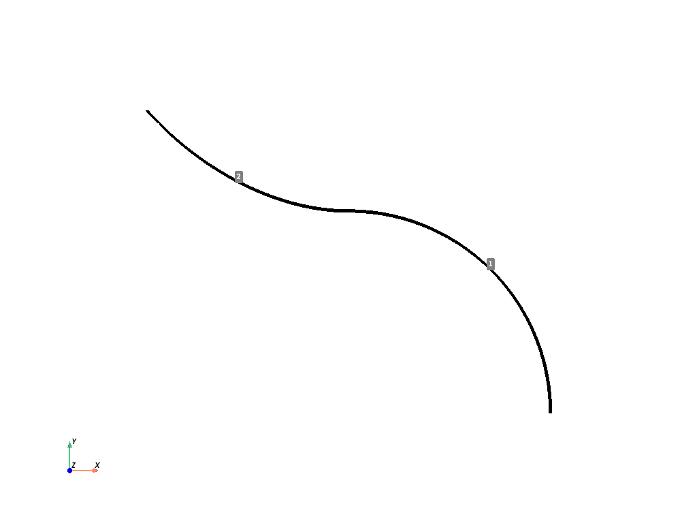
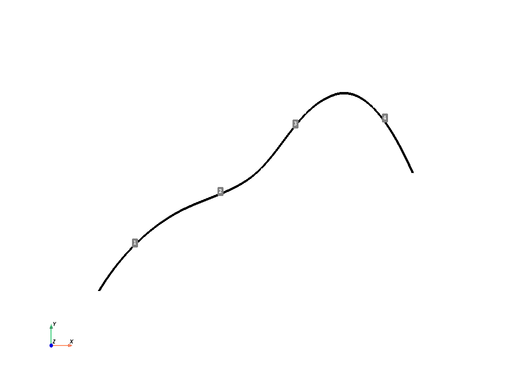

Note
Go to the end to download the full example code
Lines#
This example shows how to create basic geometry using lines commands.
import numpy as np
from ansys.mapdl.core import launch_mapdl
# start MAPDL and enter the pre-processing routine
mapdl = launch_mapdl()
mapdl.clear()
mapdl.prep7()
print(mapdl)
Product: Ansys Mechanical Enterprise
MAPDL Version: 23.1
ansys.mapdl Version: 0.65.2
APDL Command: L#
Create a line between the two keypoints (0, 0, 0) and (1, 0, 0)
1
APDL Command: LARC#
Create a circular arc that travels between (0, 0, 0) and
(1, 1, 0) with a radius of curvature of 2. Plot the result.
APDL Command: L2ANG#
Create two circles and join them with a line. Plot the result.
APDL Command: L2TAN#
Create two circular arcs and connect them with a spline. Plot the result.
mapdl.clear()
mapdl.prep7()
k0 = mapdl.k("", 0, 0, 0)
k1 = mapdl.k("", 0, 0, 1)
k2 = mapdl.k("", -1.5, 1.5, 0)
k3 = mapdl.k("", -1.5, 1.5, 1)
carc0 = mapdl.circle(k0, 1, k1, arc=90)
carc1 = mapdl.circle(k2, 1, k3, arc=90)
lnum = mapdl.l2tan(1, 2)
mapdl.lplot(background="w", color="k", line_width=5, cpos="xy")
APDL Command: LANG#
Create a line from a line from (0, 0, 0) to (1, 0, 0) to a
keypoint at (1, 1, 1) at an angle of 60 degrees. Plot the result.
APDL Command: LAREA#
Generate a line on a square between its two corners.
APDL Command: LCOMB#
Create two lines and combine them.
APDL Command: LDIV#
Create a single line and divide it into 5 pieces.
APDL Command: LEXTND#
Create a circular arc and extend it at one of its keypoints.
APDL Command: LFILLT#
Create two intersecting lines at a right angle and add a fillet between them.
APDL Command: LTAN#
Create a circular arc and generate a tangent spline at the end of it directed to a new keypoint.
APDL Command: SPLINE#
Generate a segmented spline through 5 keypoints.
APDL Command: BSPLIN#
Generate a single line from a spline fit to a series of keypoints.
Generate through (0, 0, 0), (0, 1, 0) and (1, 2, 0)
This is different than the spline method as this creates a
single line rather than multiple lines.
Line IDs#
Return an array of the line IDs
array([1], dtype=int32)
Line Geometry#
Get the VTK PolyData containing lines. This VTK mesh can be
saved or plotted. For more details, visit Pyvista documentation
Line Selection#
There are two approaches for selecting lines, the old “legacy” style and the new style. The old style is valuable for those who are comfortable with the existing MAPDL commands, and new style is useful for selecting lines in a pythonic manner.
This example generates a series of random lines and selects them
mapdl.clear()
mapdl.prep7()
def generate_random_line():
k0 = mapdl.k("", *np.random.random(3))
k1 = mapdl.k("", *np.random.random(3))
mapdl.l(k0, k1)
# create 20 random lines
for _ in range(20):
generate_random_line()
# Print the line numbers
print(mapdl.geometry.lnum)
[ 1 2 3 4 5 6 7 8 9 10 11 12 13 14 15 16 17 18 19 20]
Select every other line with the old style command.
mapdl.ksel("S", "KP", "", 1, 20, 2)
print(mapdl.geometry.lnum)
[ 1 2 3 4 5 6 7 8 9 10 11 12 13 14 15 16 17 18 19 20]
Select every other line with the new style command.
Note that the item IDs are 1 based in MAPDL, while Python ranges are 0 based.
mapdl.geometry.line_select(range(1, 21, 2))
print(mapdl.geometry.lnum)
[ 1 3 5 7 9 11 13 15 17 19]
Select lines from a list
Note that you can return_selected if you want to see what you
have selected. This is helpful when reselecting from existing
areas.
Note that you could use a numpy array here as well.
[ 1 5 10 20]
APDL Command: LPLOT#
Plot colored lines while displaying the keypoint numbers.
There are a variety of plotting options available for all the common plotting methods.
mapdl.lplot(
show_keypoint_numbering=True,
color_lines=True,
show_line_numbering=False,
background="black",
show_bounds=True,
line_width=5,
cpos="xy",
font_size=26,
)
Stop mapdl#
mapdl.exit()
Total running time of the script: ( 0 minutes 4.977 seconds)